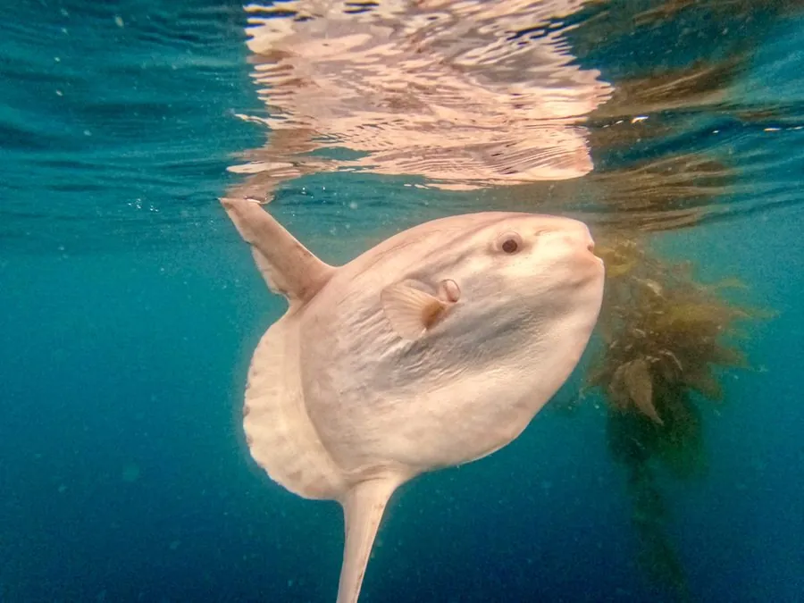

鱼类 · 动物界
翻车鱼 Mola mola

外形像被切去后半截的大型远洋鱼，靠背鳍和臀鳍缓慢摆动前进，常侧浮在海面晒太阳，主要捕食水母。
- 分类
- 门脊索动物门纲辐鳍鱼纲目鲀形目科翻车鲀科属翻车鲀属
- 栖息环境
- 温带和热带海洋的大洋上层，常侧浮于海面
- 地理分布
- 全球温带和热带海洋，包括太平洋、大西洋和印度洋
- 保护级别
- IUCN 易危（VU）；中国未列入国家重点保护野生动物名录
物种志
翻车鱼体呈巨大的卵圆形，尾部退化，身体后半截像被切掉，因此得名。它没有尾柄和尾鳍，靠高大的背鳍和臀鳍左右摆动前进。体色背部灰褐，腹部银灰，皮肤粗糙。成鱼体长一般 1.5–2.5 m，最大可达 3.3 m，体重可超过 2 t，是现存最重的硬骨鱼之一。
翻车鱼分布于全球温带和热带海洋，多在大洋上层活动，常侧卧海面晒太阳，据认为有助于提高体温或清除寄生虫。它主要以水母、浮游动物和小鱼为食，每天需要摄食大量低热量的水母。翻车鱼雌鱼可产数亿粒卵，但幼体成活率极低。由于渔业兼捕和塑料垃圾误食，其种群数量下降，IUCN 将其列为易危。
形态与习性
- 食性水母、浮游动物和小鱼
- 体长一般 1.5–2.5 m，最大可达 3.3 m
- 体重最大可超过 2 t
- 外形尾部退化，无尾柄和尾鳍，靠背鳍和臀鳍推进
- 繁殖雌鱼可产数亿粒卵，幼体成活率极低
- 习性常侧卧海面晒太阳，可能有助于升温或除虫
趣味知识
- 翻车鱼没有真正的尾鳍，身体后半截像被切掉一样。
- 一条雌鱼可产下数亿粒卵，是产卵量最大的鱼类之一。
- 它常侧浮在海面，被水手误认为翻倒的船，因此得名。